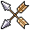
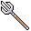

| Icon | Name | Description | Skill | Boon |
|---|
 | Aphrodite | Aphrodite is the Goddess of love, beauty, desire, sex and pleasure. | diplomacy | Aphrodite's boon: grants a bonus to enchantment magic spells |
|  | Apollo | Apollo is the God of music, arts, knowledge, healing, plague, prophecy, poetry, manly beauty, archery, and the sun. | restoration | Apollo's boon: grants a bonus to healing magic spells |
 | Ares | Ares is the God of war, bloodshed, and violence. | hand-to-hand | Ares's boon: grants a bonus to melee attacks |
| Artemis | Artemis is the Goddess of the hunt, virginity, archery, the moon, and all animals. | archery | Artemis's boon: grants a bonus to ranged attacks |
 | Athena | Athena is the Goddess of wisdom, reason, intelligent activity, literature, handicrafts and science, defense and strategic warfare. | carpentry | Athena's boon: grants a bonus to researching knowledge skills |
 | Demeter | Demeter is the God of harvest, sacred laws and life and death. | farming | Demeter's boon: grants a bonus to food harvesting |
| Dionysus | Dionysus is the God of wine, parties and festivals, madness, chaos, drunkenness, drugs, and ecstasy. | alchemy | Dionysus's boon: grants a bonus to grape harvesting and wine production |
| Hades | Hades is the God of underworld and all things beneath the earth. | evocation | Hades's boon: grants a bonus to magic that only targets undead creatures |
 | Hephaestus | Hephaestus is the crippled god of fire, metalworking, and crafts. | smithing | Hephaestus's boon: grants a bonus to smithing |
 | Hera | Hera is the Goddess of women and marriage | insight | Hera's boon: grants a bonus in seeing through illusions and disguises |
 | Hermes | Hermes is the Messenger of the gods; god of commerce, thieves, eloquence and streets. | light armor | Hermes's boon: grants a bonus to thieving |
|  | Poseidon | Poseidon is the God of the oceans, earthquakes, droughts, floods, water, aquatic creatures, marine weather and horses | fishing | Poseidon's boon: grants a bonus to fishing |
 | Zeus | Zeus is the God of the sky, lightning, thunder, law, order and justice | transmutation | Zeus's boon: grants a bonus to lightning magic spells |